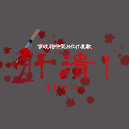
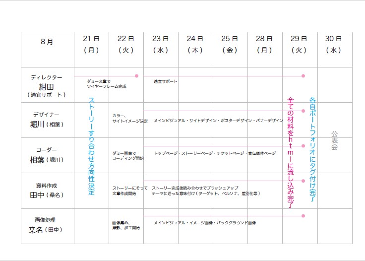

テーマ
卒業前のグループワークでインパクトあって夢中になって制作できる企画を!というコンセプトで、「お化け屋敷」を題材にしました。
架空会社「株式会社 Summer Vacation」がお化け屋敷「肝潰し」をオープンする運営会社から Webサイト・広告媒体・関連グッズのトータルデザインを依頼された設定です。
架空会社の名前は、制作時期が真夏だったこともあり、グループ制作に力を入れつつも一番は制作を楽しむことを目標としたいという思いから名付けました。
架空制作会社概要
- 制作会社名：株式会社 SummerVacation
- 企業理念：妥協なく最高峰を目指し、デザインを通してコミュニケーションを豊かにします
- キャッチコピー：フレッシュな発想力と熱い情熱でモノと経験を提供します。
-
事業内容：イベント企画・提案 / ウェブサイト構築・設計・運営支援、
ブランディング・ロゴデザインの制作・看板デザインなど
企画内容

- 企画名：事故物件型お化け屋敷「肝潰し」
- セールスポイント：実際の事故物件を使用した物件型のお化け屋敷
- ターゲット：１０代後半から３０代前半。男女比はほぼ同じを想定し、主に学生をメインターゲットとする
担当業務割
- [ディレクター]
・・・全体の進行管理、ワイヤーフレームベース作成、全体のフォロー・サポート - [デザイナー（兼コーダー補助）]
・・・ロゴマーク、サイトイメージ、メインビジュアル、グラフィックデザイン - [コーダー（兼デザイナー補助]
・・・デザイナーからの要望を形にするコーディング - [画像処理（兼ライター補助）]
・・・サイト内の画像撮影（素材収集）・加工 - [コピーライター（兼画像処理補助）]
・・・サイト内の文章作成、資料収集
作業工程
ディレクターが作業開始前にスケジューリングを行い、そちらに沿って進めていきました。
デザイン、画像、コピーは完成順からチームで意見を出し合い、ブラッシュアップの後htmlに流し込んでいきました。
担当以外にも全員にサポート業務が割り当てられており、メンバー同士がフォローする体制で進めました。
適宜進捗の擦り合わせを行い、メンバー全員が作業の全体進捗状況を随時把握できているようにしました。

私の担当業務
- ・サイト全体のデザイン制作
- ・ポスターやバナー等のPRデザイン制作
- ・チケットやステッカーなどの素材のデザインの制作
- ・コーダー補助として、下層ページのコーディングも対応
WEBサイトの見どころ
インパクトとオリジナリティにこだわり、使用している画像は9割以上が撮影から加工まですべてオリジナルで作成しています。 メインとなっている屋敷のビジュアルも、実際に学校の近くにあった廃屋を題材にして加工しました。
作品の企画からストーリーの構築、デザイン、撮影や画像加工など１からすべてグループ内で意見を出し合い制作しています。
なによりも全員で楽しみながら、細部までこだわって制作を進めていきましたので、その熱がサイトを見る人に伝わると嬉しいです。